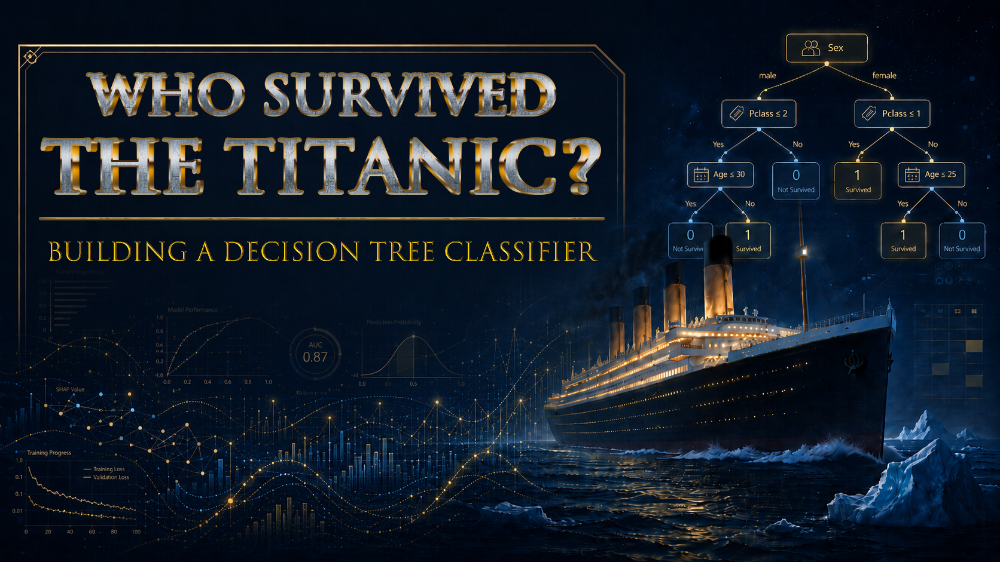
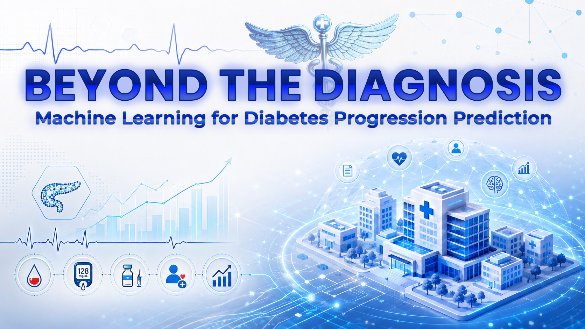

Panoramica
Cosa comprende quest’area:
I progetti attuali confrontano modelli, valutano le performance su dati non visti e analizzano quali feature contribuiscono maggiormente alle predizioni.
AREA PROGETTI
Progetti di supervised learning dedicati a regressione, classificazione, validazione, metriche e interpretazione dei modelli.

Panoramica
I progetti attuali confrontano modelli, valutano le performance su dati non visti e analizzano quali feature contribuiscono maggiormente alle predizioni.
Ambito attuale

Un workflow di classificazione supervisionata che utilizza un Decision Tree per prevedere la sopravvivenza sul Titanic con preprocessing, validazione e interpretazione accurati.
Vedi su GitHub
Un workflow di regressione interpretabile per la progressione del diabete, confrontando Linear e Ridge Regression con regolarizzazione e cross-validation.
Vedi su GitHub